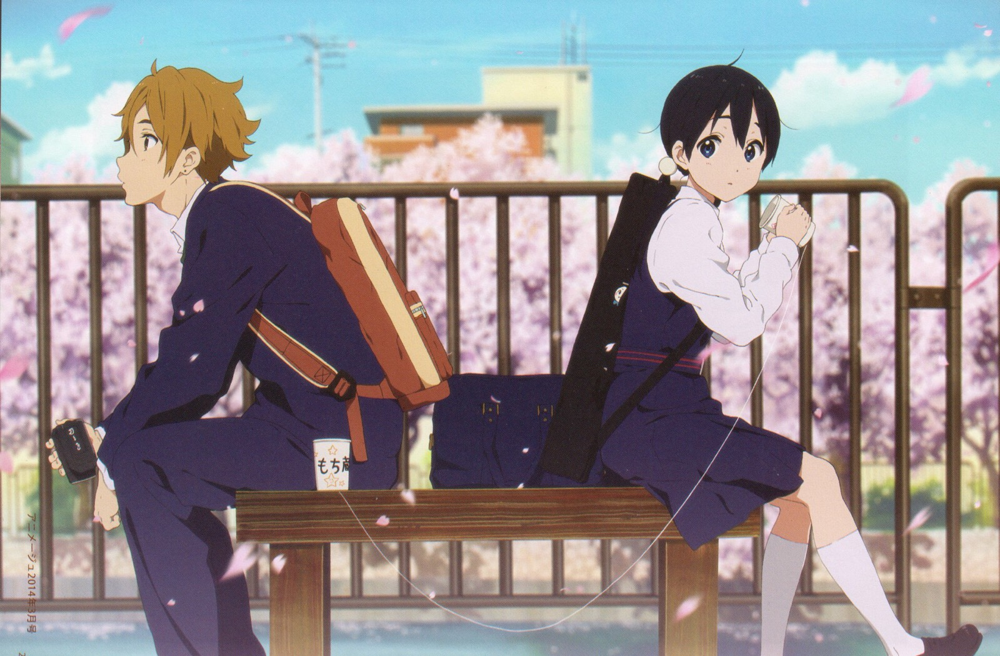

tomako love stroy
配音：洲崎绫
生日：12月31日
血型：O型
故事的主人公，兔山商店街打糕店“玉屋”的长女，母亲在她小学5年级时离世，生日是在饼店最忙碌的12月31日除夕。
热爱商店街的一切，和商店街的所有店主都有很好的关系。对恋爱很迟钝。兔山学园三年级学生，她人生里第一次和饼藏同班。
配音：田丸笃志
生日：10月10日
血型：B型
玉子家对面打糕店“大路屋”的儿子。玉子的同学和青梅竹马，喜欢着玉子。叫玉子父亲“爸爸”，而叫自己爸爸“老爹”。对玉子的父亲豆大很友善，却因是死对头的儿子而被他冷淡对待。兔山学园2年B班学生，电影研究会社员，经常带着照相机。
兔山学园三年级学生，他人生里第一次和玉子同班。
配音：金子有希
生日：8月19日
血型：B型
留着一头金色短发的少女。祖父母在兔山商店街经营玩具店“常盘堂”。
玉子的同学和青梅竹马，兔山学园三年级学生，舞棒部成员，后当选为部长。性格强硬的女孩子，在各方面的事情也很关心玉子，尤其是恋爱方面。
配音：长妻树里
生日：6月7日
血型：O型
兔山学园三年级学生，舞棒部成员。有恐高症。
家里从事木匠工作，商店街不少的店铺都是她家的顾客。很在意建筑物的垂直测量，做事十分自我。
配音：山下百合惠
生日：4月2日
血型：A型
兔山学园三年级学生，所属羽毛球部成员。外表看似冷酷而严肃的眼镜属性的美少女，但实际上心地很好。
【专辑名】主题歌《プリンシプル》
【发售日】2014年4月30日
【歌】洲崎绫
01. プリンシプル
作词：爱铃/作曲：藤本功一/编曲：谷口尚久
02.こいのうた
作词：山田尚子/作曲：山口 优/编曲：藤本功一
《玉子爱情故事》与其说反映出了商店街的快乐气氛，不如说玉子跟饼藏二人的那种可爱性格更加惹人瞩目。另外这部作品的最大看点是馅子的成长（锦织博 评）
《玉子爱情故事》可以说是电影迷们必看的一部杰出的爱情故事。作品一方面细腻地刻画了能够让女性产生共鸣的、青春期少女的无上可爱，一边又仿佛以无声电影的效果表现出动画的喜剧色彩。与此同时，观众们也可以在作品里的同性角色上找到真实感。（电影评论家增当龙也 评）
在映像拍摄方面，剧场版中运用了重视镜头的演出方法，就像是在拍摄一部真人电影，本作无论是演出方法，还是镜头拍摄的角度，“以镜头紧追被摄体”的感觉都比以往的作品显得比较强。并且把故事人物看作一个真正的人来对待，以这样一种角度去亲近故事人物，而不是单单地把他们当作“虚构故事中的人物”来对待。
《玉子爱情故事》是一部注重并且充满了青春光辉的作品，导演山田尚子正是抱着这样的心态去拍摄这部作品，而“青春”这个主题从《轻音！》时代一直延续到本作中，对玉子那个年龄的女孩子而言，她们的每一下呼吸，每一次眨眼，所有的瞬间都是“青春”。
故事中除了玉子和饼藏通过恋爱实现了自身的成长，还有其他角色也迈出了下一步，比如史织决定去留学。另外，在这部作品里面小绿是一个非常重要的人物，她的存在本身就是“青春”，山田尚子表示在电视动画中已经她带到了恋爱的入口前，在这次电影中就让她继续走下去。
总而言之，这是一个珍重恋爱萌芽这种随处可见的东西的简约故事。